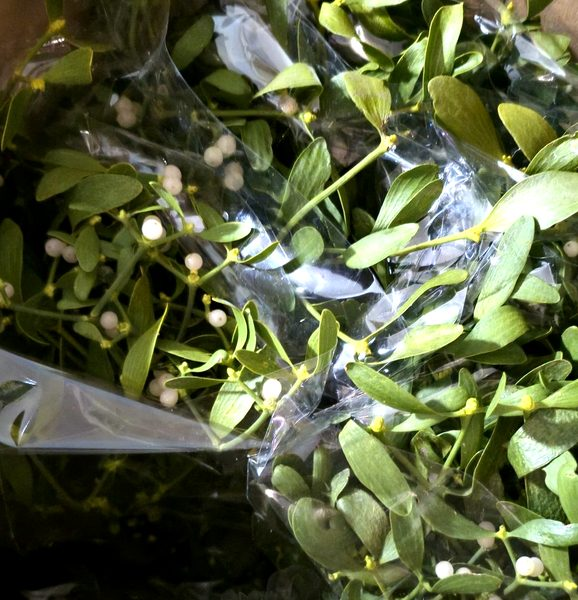
Naturel groenNatural green
Puur en onbewerkt – symbool van gezondheid.Pure and unprocessed – a symbol of health.
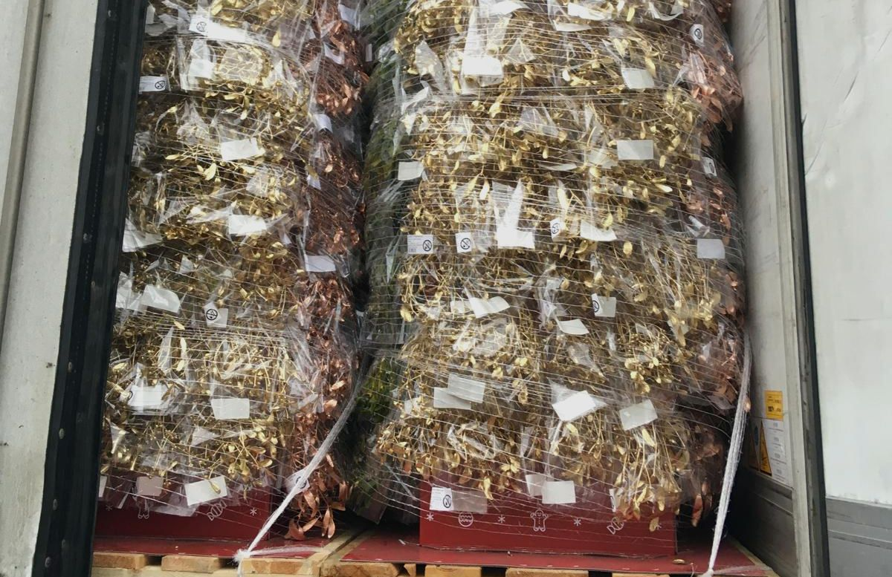
Natuurlijk gebonden maretak in naturel, zilver en goud – voor retail en groothandel in de Benelux.Naturally bound mistletoe in natural, silver and gold – for retail and wholesale across the Benelux.
Natuurlijk gebonden bossen van 110 g en 220 g, vanaf 1.000 stuks. Gekleurde maretak wordt afgewerkt met heldere, hoogwaardige verf.Naturally bound bunches of 110 g and 220 g, from 1,000 pieces. Coloured mistletoe is finished with bright, high-quality dyes.

Puur en onbewerkt – symbool van gezondheid.Pure and unprocessed – a symbol of health.
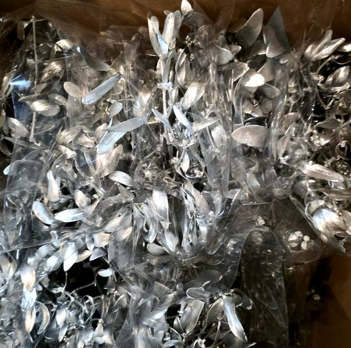
Stijlvol en winters – symbool van liefde.Stylish and wintry – a symbol of love.
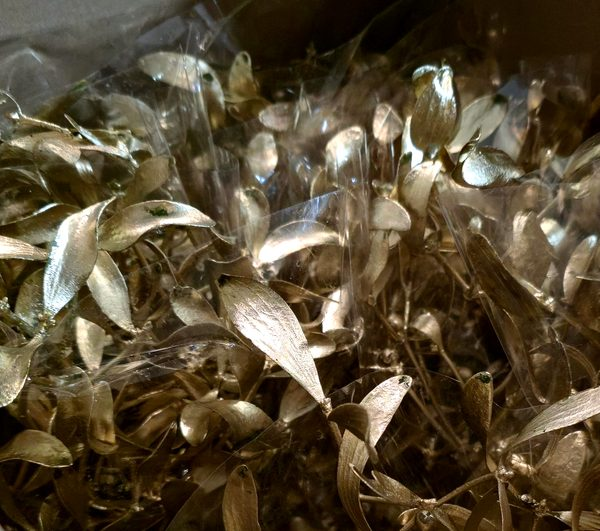
Luxe en feestelijk – symbool van voorspoed.Luxurious and festive – a symbol of prosperity.
Wij leveren aan retailketens, groothandels, tuincentra, bloemisten en marktverkopers in de Benelux.We supply retail chains, wholesalers, garden centres, florists and market traders across the Benelux.
Van ons magazijn rechtstreeks naar u – klaar voor het seizoen.From our warehouse straight to you – ready for the season.


Ter illustratie: deze foto’s zijn speciaal voor een klant gemaakt; de pallets zijn op diens verzoek zo verpakt. Wij verpakken ook in dozen. Het resultaat hangt af van de specifieke omstandigheden en uw wensen. Aan deze foto’s kunnen geen rechten worden ontleend. Op al onze aanbiedingen en leveringen zijn onze algemene voorwaarden van toepassing.For illustration only: these photos were taken specially for a customer; the pallets were packed this way at their request. We also pack in boxes. The result depends on the specific circumstances and your wishes. No rights can be derived from these photos. Our general terms and conditions apply to all our offers and deliveries.
Algemene voorwaardenGeneral terms and conditions →In drie eenvoudige stappen naar uw maretak voor de kerstverkoop.Your mistletoe for the Christmas season in three simple steps.
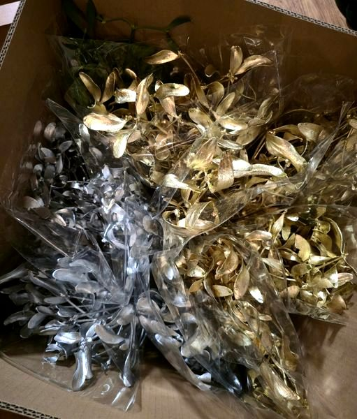
Van de kruin van de boom tot een verkoopklare bos in uw schap.From the crown of the tree to a retail-ready bunch on your shelf.
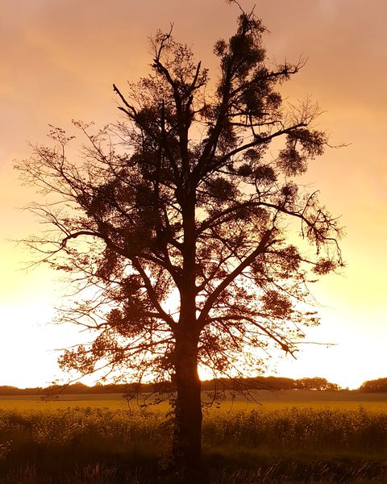
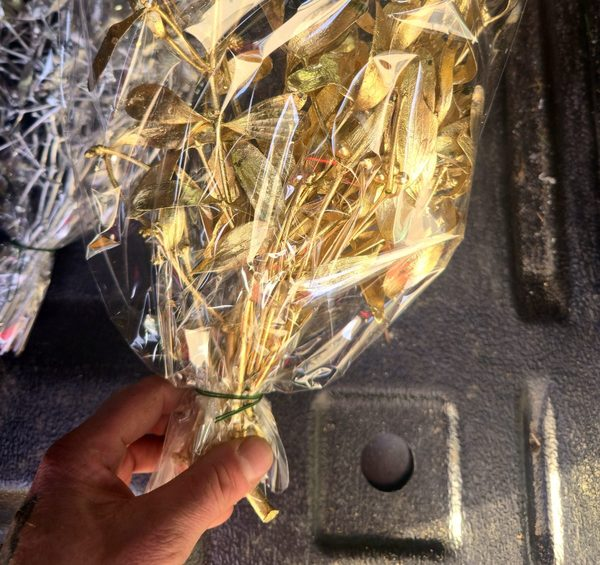
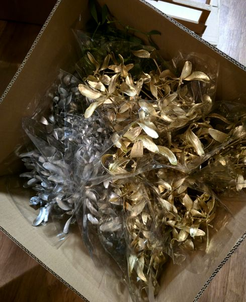
Zo komt maretak tot zijn recht: in een mand, als hangende bos of buiten in het avondlicht.How mistletoe comes into its own: in a basket, as a hanging bunch or outdoors in the evening light.
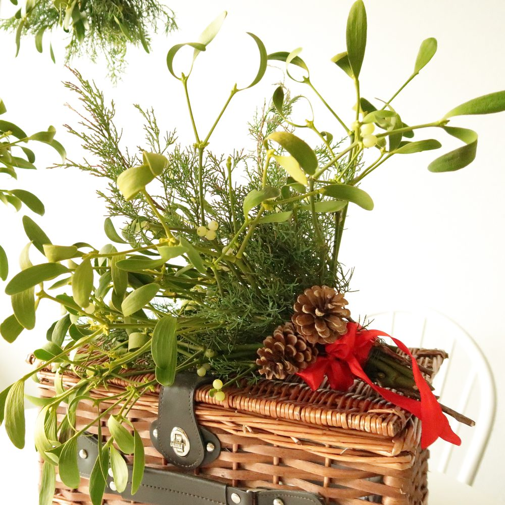
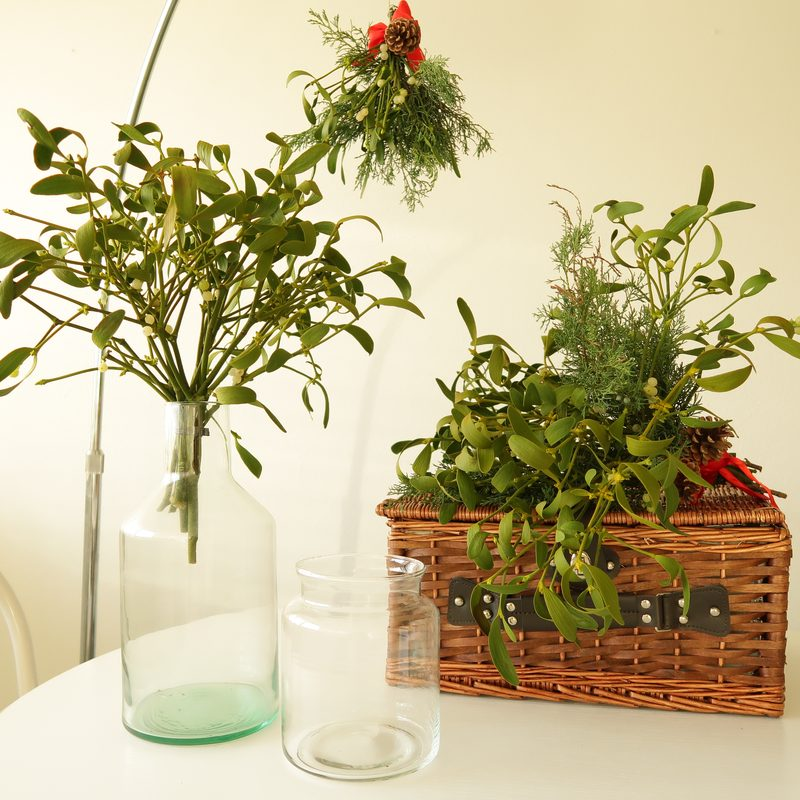
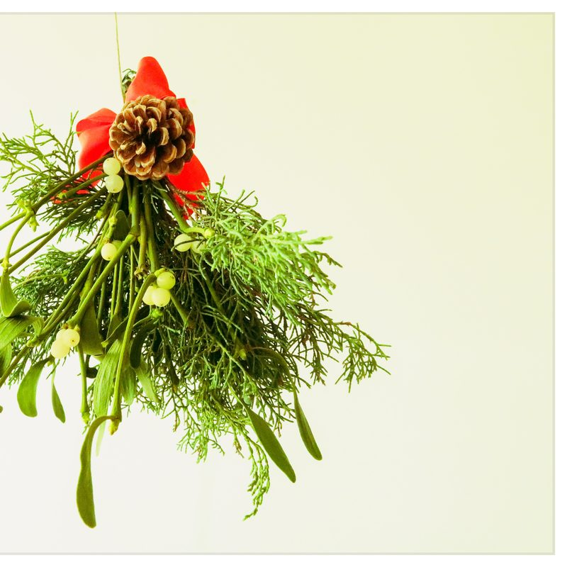
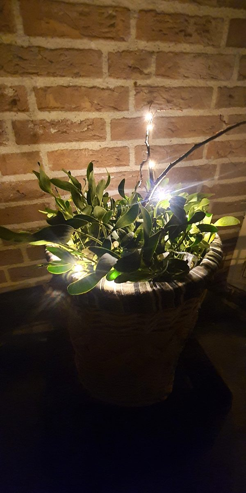
Vraag vrijblijvend een offerte aan. Wij reageren zo snel mogelijk.Request a no-obligation quote. We will get back to you as soon as possible.
+31 6 12 98 07 93 · info@decovanmaretak.nl · Vaartveld 8a73, 4704 SE Roosendaal